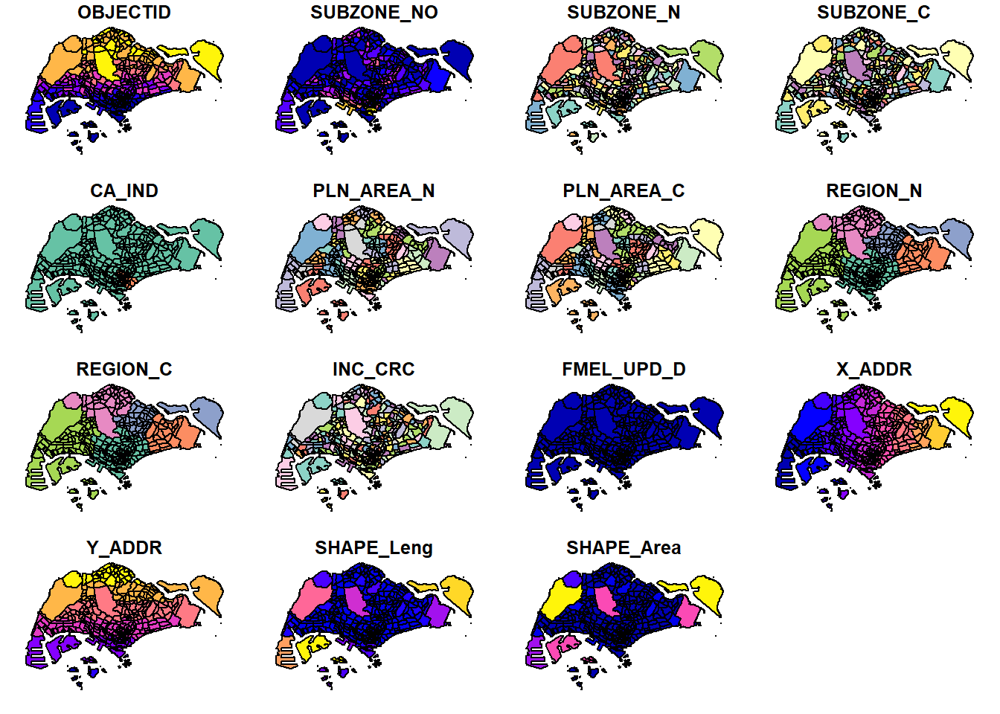
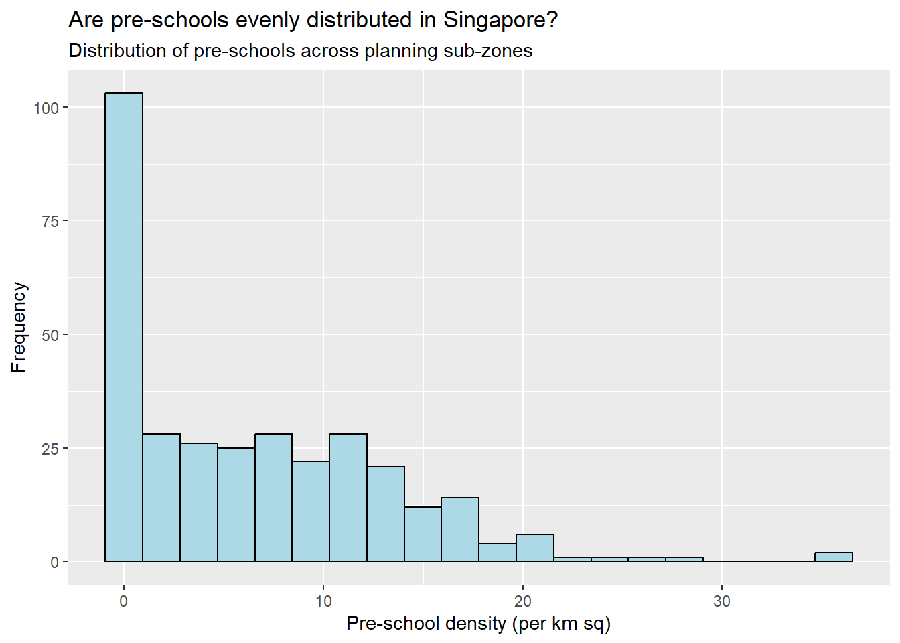
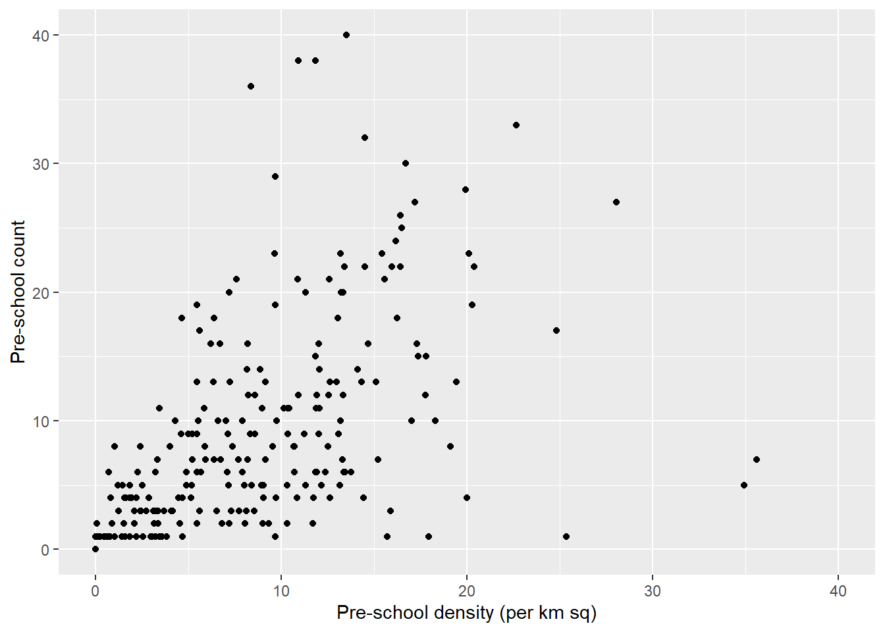

pacman::p_load(sf, tidyverse, dplyr)Hands-on Exercise 1
Introduction
This assignment demonstrates the application of geospatial data science techniques using R. The task involves importing, processing, and analyzing geospatial and aspatial data using R packages such as sf and tidyverse. The analysis is documented in this report, which includes code snippets, outputs, and explanations.
Learning Outcomes
By completing this assignment, you will learn to:
- Install and load necessary R packages (
sf,tidyverse). - Import and manage geospatial data.
- Convert and transform data coordinate systems.
- Perform geospatial data processing and visualization.
- Conduct exploratory data analysis (EDA) using
ggplot2.
Data Acquisition
Geospatial Data
Data used for this assignment are sourced from publicly available datasets:
- Master Plan 2014 Subzone Boundary (Web) from data.gov.sg
- Pre-Schools Location from data.gov.sg
- Cycling Path from LTADataMall
- Singapore Airbnb listing data from Inside Airbnb
Getting Started
Install and load necessary packages
The p_load function from the pacman package is used to install and load the sf and tidyverse packages into the R environment.
Importing Geospatial Data
In this section, geospatial data are imported using the sf package:
Import polygon feature data
Reading layer `MP14_SUBZONE_WEB_PL' from data source
`C:\Users\Jiany\maxliujy\geospatialanalytics\Hands-on_Ex\Hands-on_Ex01\data\geospatial'
using driver `ESRI Shapefile'
Simple feature collection with 323 features and 15 fields
Geometry type: MULTIPOLYGON
Dimension: XY
Bounding box: xmin: 2667.538 ymin: 15748.72 xmax: 56396.44 ymax: 50256.33
Projected CRS: SVY21Import polyline feature data
Reading layer `CyclingPathGazette' from data source
`C:\Users\Jiany\maxliujy\geospatialanalytics\Hands-on_Ex\Hands-on_Ex01\data\geospatial'
using driver `ESRI Shapefile'
Simple feature collection with 3138 features and 2 fields
Geometry type: MULTILINESTRING
Dimension: XY
Bounding box: xmin: 11854.32 ymin: 28347.98 xmax: 42644.17 ymax: 48948.15
Projected CRS: SVY21Import GIS data in KML format
preschool <- st_read("data/geospatial/PreSchoolsLocation.kml")Reading layer `PRESCHOOLS_LOCATION' from data source
`C:\Users\Jiany\maxliujy\geospatialanalytics\Hands-on_Ex\Hands-on_Ex01\data\geospatial\PreSchoolsLocation.kml'
using driver `KML'
Simple feature collection with 2290 features and 2 fields
Geometry type: POINT
Dimension: XYZ
Bounding box: xmin: 103.6878 ymin: 1.247759 xmax: 103.9897 ymax: 1.462134
z_range: zmin: 0 zmax: 0
Geodetic CRS: WGS 84Data Exploration and Visualization
Checking the Content of the Data Frame
Geometry Information
# Retrieve geometry list-column
st_geometry(mpsz)Geometry set for 323 features
Geometry type: MULTIPOLYGON
Dimension: XY
Bounding box: xmin: 2667.538 ymin: 15748.72 xmax: 56396.44 ymax: 50256.33
Projected CRS: SVY21
First 5 geometries:MULTIPOLYGON (((31495.56 30140.01, 31980.96 296...MULTIPOLYGON (((29092.28 30021.89, 29119.64 300...MULTIPOLYGON (((29932.33 29879.12, 29947.32 298...MULTIPOLYGON (((27131.28 30059.73, 27088.33 297...MULTIPOLYGON (((26451.03 30396.46, 26440.47 303...Data Structure
# Get a glimpse of the data
glimpse(mpsz)Rows: 323
Columns: 16
$ OBJECTID <int> 1, 2, 3, 4, 5, 6, 7, 8, 9, 10, 11, 12, 13, 14, 15, 16, 17, …
$ SUBZONE_NO <int> 1, 1, 3, 8, 3, 7, 9, 2, 13, 7, 12, 6, 1, 5, 1, 1, 3, 2, 2, …
$ SUBZONE_N <chr> "MARINA SOUTH", "PEARL'S HILL", "BOAT QUAY", "HENDERSON HIL…
$ SUBZONE_C <chr> "MSSZ01", "OTSZ01", "SRSZ03", "BMSZ08", "BMSZ03", "BMSZ07",…
$ CA_IND <chr> "Y", "Y", "Y", "N", "N", "N", "N", "Y", "N", "N", "N", "N",…
$ PLN_AREA_N <chr> "MARINA SOUTH", "OUTRAM", "SINGAPORE RIVER", "BUKIT MERAH",…
$ PLN_AREA_C <chr> "MS", "OT", "SR", "BM", "BM", "BM", "BM", "SR", "QT", "QT",…
$ REGION_N <chr> "CENTRAL REGION", "CENTRAL REGION", "CENTRAL REGION", "CENT…
$ REGION_C <chr> "CR", "CR", "CR", "CR", "CR", "CR", "CR", "CR", "CR", "CR",…
$ INC_CRC <chr> "5ED7EB253F99252E", "8C7149B9EB32EEFC", "C35FEFF02B13E0E5",…
$ FMEL_UPD_D <date> 2014-12-05, 2014-12-05, 2014-12-05, 2014-12-05, 2014-12-05…
$ X_ADDR <dbl> 31595.84, 28679.06, 29654.96, 26782.83, 26201.96, 25358.82,…
$ Y_ADDR <dbl> 29220.19, 29782.05, 29974.66, 29933.77, 30005.70, 29991.38,…
$ SHAPE_Leng <dbl> 5267.381, 3506.107, 1740.926, 3313.625, 2825.594, 4428.913,…
$ SHAPE_Area <dbl> 1630379.27, 559816.25, 160807.50, 595428.89, 387429.44, 103…
$ geometry <MULTIPOLYGON [m]> MULTIPOLYGON (((31495.56 30..., MULTIPOLYGON (…Plotting Geospatial Data
# Default plot of an sf object
plot(mpsz, max.plot =15)
# Plot only the geometry
plot(st_geometry(mpsz))
# Plot using a specific attribute
plot(mpsz["PLN_AREA_N"])
Working with Projections
Assigning and Transforming Projections
# Default plot of an sf object
# Assign correct EPSG code
mpsz3414 <- st_set_crs(mpsz, 3414)Warning: st_crs<- : replacing crs does not reproject data; use st_transform for
that# Transform projection for preschool data
preschool3414 <- st_transform(preschool, crs = 3414)Importing and Converting Aspatial Data
Importing CSV Data
# Import aspatial data
listings <- read_csv("data/aspatial/listings.csv")Rows: 3540 Columns: 75
── Column specification ────────────────────────────────────────────────────────
Delimiter: ","
chr (26): listing_url, source, name, description, neighborhood_overview, pi...
dbl (38): id, scrape_id, host_id, host_listings_count, host_total_listings_...
lgl (6): host_is_superhost, host_has_profile_pic, host_identity_verified, ...
date (5): last_scraped, host_since, calendar_last_scraped, first_review, la...
ℹ Use `spec()` to retrieve the full column specification for this data.
ℹ Specify the column types or set `show_col_types = FALSE` to quiet this message.list(listings)[[1]]
# A tibble: 3,540 × 75
id listing_url scrape_id last_scraped source name description
<dbl> <chr> <dbl> <date> <chr> <chr> <chr>
1 71609 https://www.airbnb.co… 2.02e13 2024-06-29 previ… Ensu… For 3 room…
2 71896 https://www.airbnb.co… 2.02e13 2024-06-29 city … B&B … <NA>
3 71903 https://www.airbnb.co… 2.02e13 2024-06-29 city … Room… Like your …
4 275343 https://www.airbnb.co… 2.02e13 2024-06-29 city … 10mi… **IMPORTAN…
5 275344 https://www.airbnb.co… 2.02e13 2024-06-29 city … 15 m… Lovely hom…
6 289234 https://www.airbnb.co… 2.02e13 2024-06-29 previ… Book… This whole…
7 294281 https://www.airbnb.co… 2.02e13 2024-06-29 city … 5 mi… I have 3 b…
8 324945 https://www.airbnb.co… 2.02e13 2024-06-29 city … Comf… **IMPORTAN…
9 330095 https://www.airbnb.co… 2.02e13 2024-06-29 city … Rela… **IMPORTAN…
10 344803 https://www.airbnb.co… 2.02e13 2024-06-29 city … Budg… Direct bus…
# ℹ 3,530 more rows
# ℹ 68 more variables: neighborhood_overview <chr>, picture_url <chr>,
# host_id <dbl>, host_url <chr>, host_name <chr>, host_since <date>,
# host_location <chr>, host_about <chr>, host_response_time <chr>,
# host_response_rate <chr>, host_acceptance_rate <chr>,
# host_is_superhost <lgl>, host_thumbnail_url <chr>, host_picture_url <chr>,
# host_neighbourhood <chr>, host_listings_count <dbl>, …Convert aspatial data to sf data frame
# Convert aspatial data to sf data frame
listings_sf <- st_as_sf(listings, coords = c("longitude", "latitude"), crs = 4326) %>%
st_transform(crs = 3414)
glimpse(listings_sf)Rows: 3,540
Columns: 74
$ id <dbl> 71609, 71896, 71903, 2753…
$ listing_url <chr> "https://www.airbnb.com/r…
$ scrape_id <dbl> 2.024063e+13, 2.024063e+1…
$ last_scraped <date> 2024-06-29, 2024-06-29, …
$ source <chr> "previous scrape", "city …
$ name <chr> "Ensuite Room (Room 1 & 2…
$ description <chr> "For 3 rooms.Book room 1 …
$ neighborhood_overview <chr> NA, NA, "Quiet and view o…
$ picture_url <chr> "https://a0.muscache.com/…
$ host_id <dbl> 367042, 367042, 367042, 1…
$ host_url <chr> "https://www.airbnb.com/u…
$ host_name <chr> "Belinda", "Belinda", "Be…
$ host_since <date> 2011-01-29, 2011-01-29, …
$ host_location <chr> "Singapore", "Singapore",…
$ host_about <chr> "Hi My name is Belinda -H…
$ host_response_time <chr> "within an hour", "within…
$ host_response_rate <chr> "100%", "100%", "100%", "…
$ host_acceptance_rate <chr> "N/A", "N/A", "N/A", "99%…
$ host_is_superhost <lgl> FALSE, FALSE, FALSE, FALS…
$ host_thumbnail_url <chr> "https://a0.muscache.com/…
$ host_picture_url <chr> "https://a0.muscache.com/…
$ host_neighbourhood <chr> "Tampines", "Tampines", "…
$ host_listings_count <dbl> 6, 6, 6, 49, 49, 6, 7, 49…
$ host_total_listings_count <dbl> 11, 11, 11, 73, 73, 11, 8…
$ host_verifications <chr> "['email', 'phone']", "['…
$ host_has_profile_pic <lgl> TRUE, TRUE, TRUE, TRUE, T…
$ host_identity_verified <lgl> TRUE, TRUE, TRUE, TRUE, T…
$ neighbourhood <chr> NA, NA, "Singapore, Singa…
$ neighbourhood_cleansed <chr> "Tampines", "Tampines", "…
$ neighbourhood_group_cleansed <chr> "East Region", "East Regi…
$ property_type <chr> "Private room in villa", …
$ room_type <chr> "Private room", "Private …
$ accommodates <dbl> 3, 1, 2, 1, 1, 4, 2, 1, 1…
$ bathrooms <dbl> NA, 0.5, 0.5, 2.0, 2.5, N…
$ bathrooms_text <chr> "1 private bath", "Shared…
$ bedrooms <dbl> 2, 1, 1, 1, 1, 3, 2, 1, 1…
$ beds <dbl> NA, 1, 2, 1, 1, NA, 1, 1,…
$ amenities <chr> "[\"Free parking on premi…
$ price <chr> NA, "$80.00", "$80.00", "…
$ minimum_nights <dbl> 92, 92, 92, 180, 180, 92,…
$ maximum_nights <dbl> 365, 365, 365, 999, 999, …
$ minimum_minimum_nights <dbl> 92, 92, 92, 180, 180, 92,…
$ maximum_minimum_nights <dbl> 92, 92, 92, 180, 180, 92,…
$ minimum_maximum_nights <dbl> 1125, 1125, 1125, 1125, 1…
$ maximum_maximum_nights <dbl> 1125, 1125, 1125, 1125, 1…
$ minimum_nights_avg_ntm <dbl> 92, 92, 92, 180, 180, 92,…
$ maximum_nights_avg_ntm <dbl> 1125, 1125, 1125, 1125, 1…
$ calendar_updated <lgl> NA, NA, NA, NA, NA, NA, N…
$ has_availability <lgl> TRUE, TRUE, TRUE, TRUE, T…
$ availability_30 <dbl> 30, 30, 30, 28, 0, 29, 30…
$ availability_60 <dbl> 59, 53, 60, 58, 0, 58, 60…
$ availability_90 <dbl> 89, 83, 90, 62, 0, 88, 90…
$ availability_365 <dbl> 89, 148, 90, 62, 0, 88, 3…
$ calendar_last_scraped <date> 2024-06-29, 2024-06-29, …
$ number_of_reviews <dbl> 19, 24, 46, 20, 16, 12, 1…
$ number_of_reviews_ltm <dbl> 0, 0, 0, 0, 2, 0, 0, 1, 1…
$ number_of_reviews_l30d <dbl> 0, 0, 0, 0, 0, 0, 0, 0, 0…
$ first_review <date> 2011-12-19, 2011-07-30, …
$ last_review <date> 2020-01-17, 2019-10-13, …
$ review_scores_rating <dbl> 4.44, 4.16, 4.41, 4.40, 4…
$ review_scores_accuracy <dbl> 4.37, 4.22, 4.39, 4.16, 4…
$ review_scores_cleanliness <dbl> 4.00, 4.09, 4.52, 4.26, 4…
$ review_scores_checkin <dbl> 4.63, 4.43, 4.63, 4.47, 4…
$ review_scores_communication <dbl> 4.78, 4.43, 4.64, 4.42, 4…
$ review_scores_location <dbl> 4.26, 4.17, 4.50, 4.53, 4…
$ review_scores_value <dbl> 4.32, 4.04, 4.36, 4.63, 4…
$ license <chr> NA, NA, NA, "S0399", "S03…
$ instant_bookable <lgl> FALSE, FALSE, FALSE, TRUE…
$ calculated_host_listings_count <dbl> 6, 6, 6, 49, 49, 6, 7, 49…
$ calculated_host_listings_count_entire_homes <dbl> 0, 0, 0, 0, 0, 0, 1, 0, 0…
$ calculated_host_listings_count_private_rooms <dbl> 6, 6, 6, 49, 49, 6, 6, 49…
$ calculated_host_listings_count_shared_rooms <dbl> 0, 0, 0, 0, 0, 0, 0, 0, 0…
$ reviews_per_month <dbl> 0.12, 0.15, 0.29, 0.15, 0…
$ geometry <POINT [m]> POINT (41972.5 3639…Geoprocessing with sf Package
Buffering
# Compute 5-meter buffers around cycling paths
buffer_cycling <- st_buffer(cyclingpath, dist = 5, nQuadSegs = 30)
# Calculate the area of the buffers
buffer_cycling$AREA <- st_area(buffer_cycling)
# Derive the total land area
total_area <- sum(buffer_cycling$AREA)
total_area2218855 [m^2]Point-in-Polygon Count
# Count the number of pre-schools in each planning subzone
mpsz3414$`PreSch Count` <- lengths(st_intersects(mpsz3414, preschool3414))
summary(mpsz3414$`PreSch Count`) Min. 1st Qu. Median Mean 3rd Qu. Max.
0.00 0.00 4.00 7.09 10.00 72.00 # Planning subzone with the most number of pre-schools
top_n(mpsz3414, 1, `PreSch Count`)Simple feature collection with 1 feature and 16 fields
Geometry type: MULTIPOLYGON
Dimension: XY
Bounding box: xmin: 39655.33 ymin: 35966 xmax: 42940.57 ymax: 38622.37
Projected CRS: SVY21 / Singapore TM
OBJECTID SUBZONE_NO SUBZONE_N SUBZONE_C CA_IND PLN_AREA_N PLN_AREA_C
1 189 2 TAMPINES EAST TMSZ02 N TAMPINES TM
REGION_N REGION_C INC_CRC FMEL_UPD_D X_ADDR Y_ADDR SHAPE_Leng
1 EAST REGION ER 21658EAAF84F4D8D 2014-12-05 41122.55 37392.39 10180.62
SHAPE_Area geometry PreSch Count
1 4339824 MULTIPOLYGON (((42196.76 38... 72#calculating the density of pre-school by planning subzone
mpsz3414$Area <- mpsz3414 %>%
st_area()
#compute pre-schoold density
mpsz3414 <- mpsz3414 %>%
mutate(`PreSch Density` = `PreSch Count`/Area * 1000000)Exploratory Data Analysis (EDA)
Histogram of Pre-School Density
# Plot histogram with ggplot2
ggplot(data = mpsz3414, aes(x = as.numeric(`PreSch Density`))) +
geom_histogram(bins = 20, color = "black", fill = "light blue") +
labs(title = "Are pre-schools evenly distributed in Singapore?",
subtitle = "Distribution of pre-schools across planning sub-zones",
x = "Pre-school density (per km sq)",
y = "Frequency")
Scatterplot of Pre-school Density vs. Count
# Plot histogram with ggplot2
ggplot(data = mpsz3414, aes(y = `PreSch Count`, x = as.numeric(`PreSch Density`))) +
geom_point(color = "black", fill = "light blue") +
xlim(0, 40) +
ylim(0, 40) +
labs(x = "Pre-school density (per km sq)", y = "Pre-school count")Warning: Removed 2 rows containing missing values (`geom_point()`).
Conclusion
This assignment has demonstrated essential geospatial data science tasks in R, including data importation, projection transformations, geospatial processing, and exploratory data analysis. The results provide insights into the spatial distribution of pre-schools in Singapore.